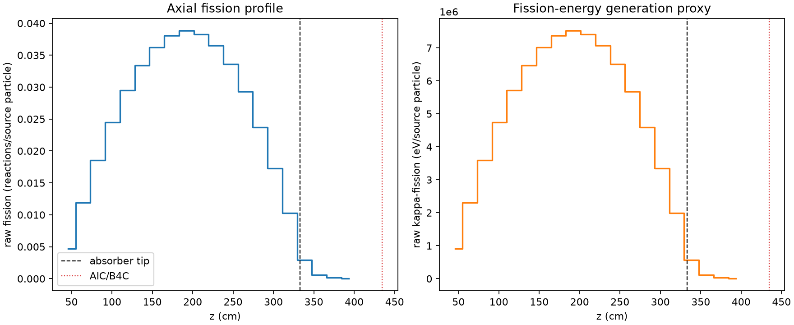
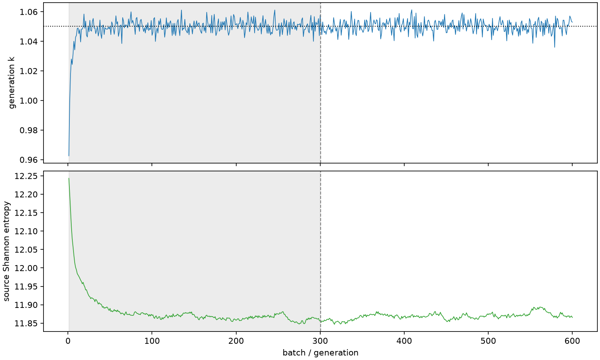

| field | value |
|---|---|
| experiment | V2-STAGE_256_OGRENCI_03-0002 |
| k | 1.0501890582330344 |
| MC standard error | 0.00017238592407444036 |
| seconds | 1002.1187670389918 |
| acceptance | not_assessed |
| convergence | review_required |
Completed is output integrity only; physical and statistical review required. Zero tallies do not prove zero production or zero uncertainty.
| diagnostic | value |
|---|---|
| geometric fuel voxels | 5280 |
| zero fission tally voxels | 0 |
| low signal fuel voxels | 242 |
| low signal fission share | 6.789676517041106e-05 |
| low signal kappa share | 6.793552405907094e-05 |
| important fission share | 0.9500117461802325 |
| previous filter included | 5038 |
| duration estimate s | 1562.5173488400023 |
| actual minus estimate s | -560.3985818010106 |
| fission relative MC error | statistics |
|---|---|
| all_geometric_fuel | {"voxels": 5280, "positive_mean_voxels": 5280, "zero_mean_voxels": 0, "undefined_relative_error_voxels": 0, "median": 0.009791351892517453, "p95": 0.1788876198995289, "maximum": 0.47513304477808427} |
| low_signal | {"voxels": 242, "positive_mean_voxels": 242, "zero_mean_voxels": 0, "undefined_relative_error_voxels": 0, "median": 0.24148845890016069, "p95": 0.3217679149373042, "maximum": 0.47513304477808427} |
| important_95pct | {"voxels": 3632, "positive_mean_voxels": 3632, "zero_mean_voxels": 0, "undefined_relative_error_voxels": 0, "median": 0.008599944643314376, "p95": 0.01304424249938063, "maximum": 0.016026667662911304} |
| outside_previous_filter | {"voxels": 242, "positive_mean_voxels": 242, "zero_mean_voxels": 0, "undefined_relative_error_voxels": 0, "median": 0.24148845890016069, "p95": 0.3217679149373042, "maximum": 0.47513304477808427} |
| kappa_fission relative MC error | statistics |
|---|---|
| all_geometric_fuel | {"voxels": 5280, "positive_mean_voxels": 5280, "zero_mean_voxels": 0, "undefined_relative_error_voxels": 0, "median": 0.009778883093151284, "p95": 0.17851249983033968, "maximum": 0.4745658126687855} |
| low_signal | {"voxels": 242, "positive_mean_voxels": 242, "zero_mean_voxels": 0, "undefined_relative_error_voxels": 0, "median": 0.24111409163160405, "p95": 0.3210470490275336, "maximum": 0.4745658126687855} |
| important_95pct | {"voxels": 3632, "positive_mean_voxels": 3632, "zero_mean_voxels": 0, "undefined_relative_error_voxels": 0, "median": 0.00858860601263254, "p95": 0.013028611884006584, "maximum": 0.01600572075461677} |
| outside_previous_filter | {"voxels": 242, "positive_mean_voxels": 242, "zero_mean_voxels": 0, "undefined_relative_error_voxels": 0, "median": 0.24111409163160405, "p95": 0.3210470490275336, "maximum": 0.4745658126687855} |
| axial bin | fission share | kappa-fission share |
|---|---|---|
| 1 | 0.010974410684341084 | 0.010975041474088225 |
| 2 | 0.027821891480000884 | 0.027821856209242338 |
| 3 | 0.043238669598519484 | 0.04323833100895486 |
| 4 | 0.05724105440905833 | 0.05724070177022097 |
| 5 | 0.06889264601033283 | 0.06889240063625013 |
| 6 | 0.07802601532065385 | 0.07802571337058002 |
| 7 | 0.08452138230676726 | 0.08452144248373142 |
| 8 | 0.08885744748500504 | 0.08885740777576433 |
| 9 | 0.09060902755942936 | 0.09060871185838 |
| 10 | 0.08932524208562573 | 0.08932503948283123 |
| 11 | 0.08529028523925483 | 0.08529000683258457 |
| 12 | 0.07848710595977451 | 0.07848680719930361 |
| 13 | 0.06846474549829087 | 0.068464362394396 |
| 14 | 0.05532682383104412 | 0.055326724558532804 |
| 15 | 0.040387928482254934 | 0.04038759373976995 |
| 16 | 0.02393974848670722 | 0.023939569974764176 |
| 17 | 0.006765752505233702 | 0.006767598535215492 |
| 18 | 0.0014194906220556692 | 0.0014201516845253124 |
| 19 | 0.00033593957384753665 | 0.0003361027462530249 |
| 20 | 7.439286180271918e-05 | 7.443626461155629e-05 |
Histories include the inactive-to-active transition at batch 300. kappa-fission approximates fission energy production, not total heat deposition.

